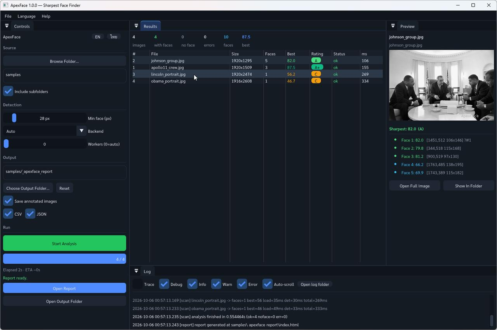
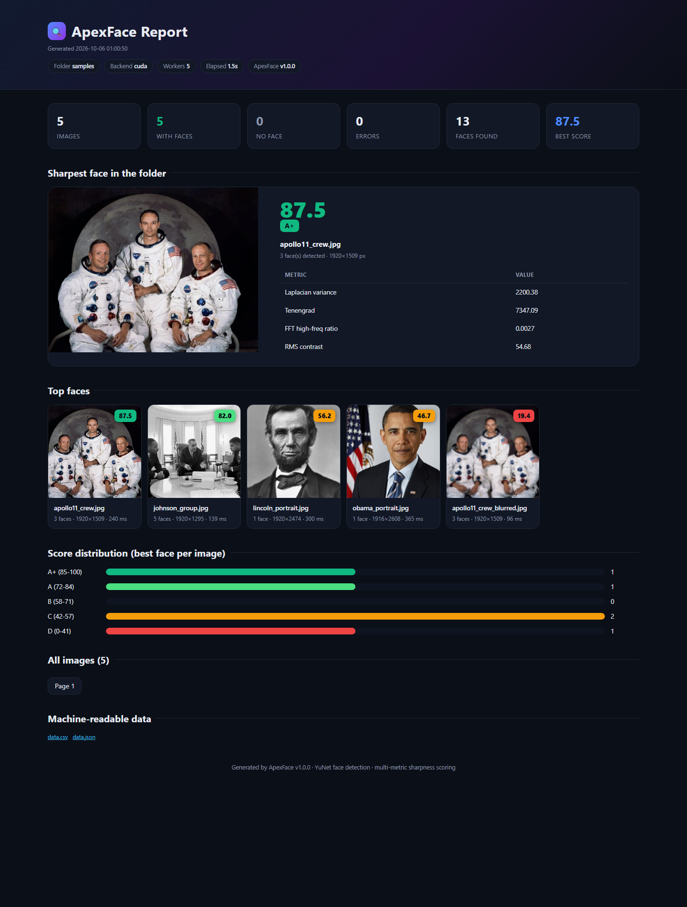
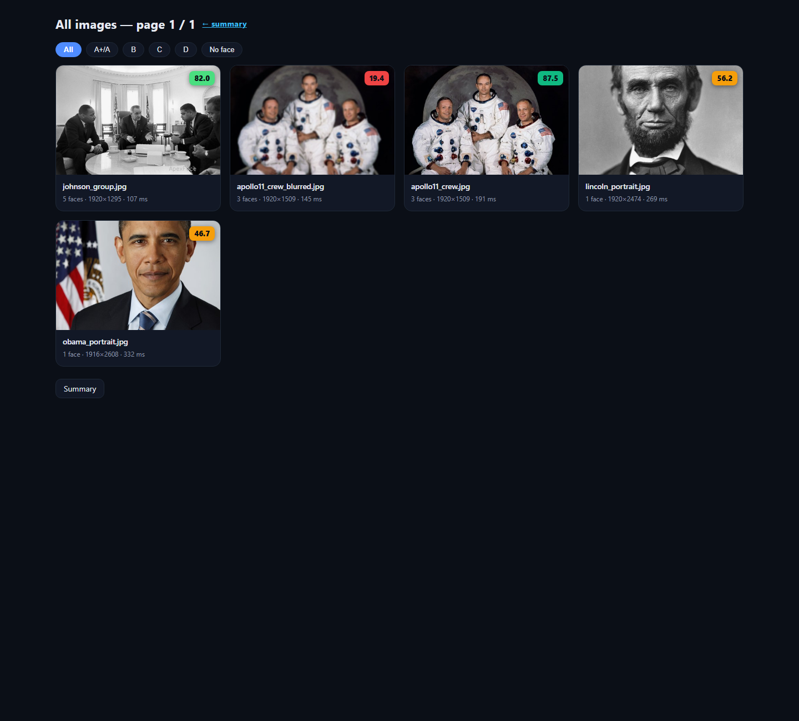

Why ApexFace?
If you shoot events — races, weddings, group sessions — you end up with thousands of near identical frames where the only meaningful difference is whether the subject's face is critically sharp. ApexFace automates the triage:
- Pick the keeper automatically — the best-scoring face per image is highlighted (#1) with a colored rating badge.
- Understand every score — the report exposes the underlying metrics (Laplacian variance, Tenengrad, FFT high-frequency ratio, RMS contrast) per face.
- Go through thousands of photos fast — multi-threaded pipeline, ~26 photos/s on a GTX 1060 for 24 MP files.
- Get a shareable report — a dark-themed HTML report with a hero card, top gallery, score distribution and filterable card grid, plus
data.csv/data.jsonfor scripting.
Features
| Area | Details |
|---|---|
| Detection | Google YuNet (2023mar, 232 KB ONNX) via cv::FaceDetectorYN; auto CUDA → CPU fallback; boxes mapped back to full resolution; EXIF orientation handled correctly for portrait/landscape mixes |
| Sharpness score | Weighted multi-metric score (0–100) with small-face attenuation; ratings A+ABCD; no-face photos are graded D |
| Move rejects | Optionally move grade-D / no-face originals into _apexface_rejects/ after the run (GUI checkbox or --move-d), keeping relative paths — every move is logged and listed in the report |
| GUI | Dear ImGui docking UI: native folder picker, live progress, results table, preview panel with per-face metrics, log viewer, EN/ไทย toggle |
| CLI | apexface-cli <folder> [options] for batch/scripted use, --dump-metrics for calibration |
| Report | index.html summary + paginated card pages + data.csv + data.json + annotated full-res copies + thumbnails |
| Logging | Session .log (TRACE..ERROR, ms timestamps, categories) and structured .events.jsonl; log copied into every report |
| Robustness | Unicode-safe file IO with EXIF orientation handling; skips its own output folders; per-file error isolation |
Report preview



Quick start
GUI
- Download and unzip the release, run
ApexFace.exe. - Browse Folder… → pick your photo folder.
- Start Analysis → wait for Report ready → Open Report.
CLI
apexface-cli.exe D:\photos --recursive --min-face 28 --backend auto --out D:\photos\_apexface_report=== ApexFace summary ===
images : 400
with faces : 400
no face : 0
errors : 0
faces found : 708
best score : 83.11 (DEC00387.JPG)
backend : cuda
elapsed : 15.4 sOptions: --out DIR · --no-recursive · --min-face N · --backend auto|cpu|cuda ·
--workers N · --no-annotated · --no-csv · --no-json · --move-d · --max-images N · --dump-metrics F · --quiet
--move-d relocates grade-D and no-face originals into <folder>\_apexface_rejects
after the run (moved, not deleted; every move is logged and listed in the report).
How the score works
Each face is cropped (50% margin) at full resolution and scored by a weighted blend of classic focus measures:
| Metric | Weight | What it measures |
|---|---|---|
| Laplacian variance | 55% | Blur sensitivity (second-derivative energy) |
| Tenengrad | 35% | Sobel gradient magnitude energy |
| FFT high-frequency ratio | 10% | Share of spectral energy beyond r > 64 (256×256 crop) |
Faces narrower than 96 px get their score attenuated (down to ×0.55). Rating bands: A+ ≥ 85 · A ≥ 72 · B ≥ 58 · C ≥ 42 · D < 42. Full methodology and calibration: docs/RESEARCH.

Building from source
Requirements: C++20, CMake ≥ 3.20, OpenCV 4.x (with objdetect + dnn), MSVC 2022.
On the dev machine OpenCV 4.14 + CUDA is preinstalled at C:\_OpenCV\install and registered with CMake.
git clone https://github.com/<owner>/ApexFace.git
cd ApexFace
build.bat :: configure + build (MSVC x64, Release)
scripts\run_gui.batThird-party libraries (Dear ImGui docking, GLFW 3.4, nativefiledialog-extended) are vendored
in third_party/ — no network access needed at build time. On other machines pass
-DOpenCV_DIR="C:/path/to/opencv/install".
Project layout
ApexFace/
├── src/core/ detection, scoring, scanning, report, logging, settings
├── src/gui/ ImGui app + theme/fonts
├── src/app/ main_gui.cpp / main_cli.cpp
├── models/ face_detection_yunet_2023mar.onnx
├── fonts/ Sarabun (Thai-capable UI font, OFL)
├── samples/ public-domain demo photos (incl. one synthetic blur)
├── third_party/ imgui (docking) · glfw 3.4 · nativefiledialog-extended
├── docs/ README / RESEARCH / CHANGELOG (.md + .html) + img
└── assets/img/ screenshots & diagramsเอกสารภาษาไทย (สรุป)
ApexFace คือโปรแกรมบนเดสก์ท็อป (C++/OpenCV) สำหรับ "หยิบโฟลเดอร์รูปมา แล้วหาว่ารูปไหน ใบหน้าคมชัดที่สุด" — เหมาะกับช่างภาพงานอีเวนต์ที่ต้องคัดรูปนับพันใบ
- เปิด
ApexFace.exe→ กด เลือกโฟลเดอร์... → กด เริ่มวิเคราะห์ - ตรวจจับใบหน้าด้วยโมเดล YuNet (ใช้ GPU ถ้ามี ไม่มีก็สลับเป็น CPU อัตโนมัติ) แล้วให้คะแนนความคมชัด 0–100 ต่อใบหน้า (ไม่ใช่ต่อรูป) โดยวัดจาก Laplacian variance, Tenengrad และพลังงานความถี่สูงแบบ FFT
- ได้รายงาน HTML: รูปพร้อมกรอบหน้า + คะแนน + เกรด A+ ถึง D คัดกรองตามเกรดได้ พร้อม
data.csv/data.json - ตัวเลือก: รวมโฟลเดอร์ย่อย, ขนาดใบหน้าต่ำสุด, จำนวนเธรด, บันทึกรูปพร้อมกรอบ, ภาษาไทย/อังกฤษ
- ทุกการรันมีไฟล์ log ละเอียด (
.log+.events.jsonl) ในโฟลเดอร์ output และแนบไปกับรายงาน
Credits & licenses
- OpenCV (Apache-2.0) — detection via
cv::FaceDetectorYN - YuNet face detection model (Apache-2.0, OpenCV Zoo)
- Dear ImGui (MIT) · GLFW (Zlib) · nativefiledialog-extended (Zlib)
- Sarabun font (SIL OFL 1.1)
- Sample photos in
samples/are public domain (official White House portrait of Barack Obama — Pete Souza; Apollo 11 crew portrait — NASA; LBJ meeting with civil rights leaders — NASA/LBJ Library; Abraham Lincoln O-77 — Library of Congress).apollo11_crew_blurred.jpgis a synthetic Gaussian-blurred derivative created for demo purposes.